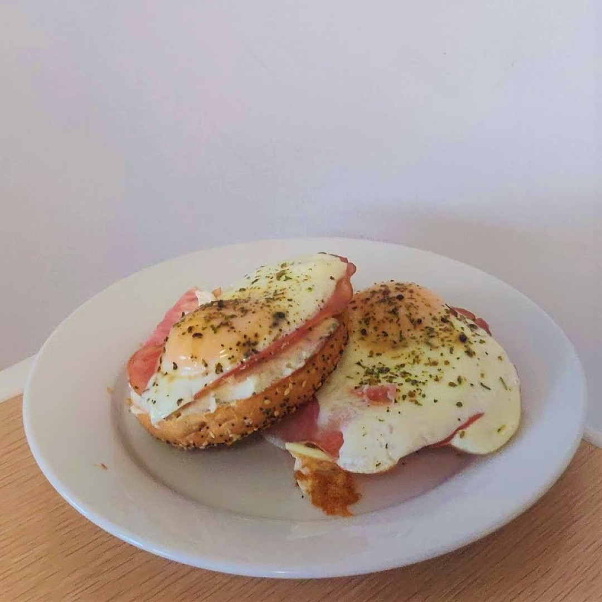

My name is Dorotea, check out the top of the page! I'm a new grad with big dreams of becoming a structural packaging designer.
Scratch that.
I have become a structural packaging designer, as was established in my PPA win and 4 years of education. I am a web developer. I am a manager. I am a researcher. I am always looking to grow.
I am multicultural to the core. Born in Canada, raised in China, proudly Czech and Serbian, and I speak all those languages too. My stomach is also multi-cultural ;) as I love exploring Toronto food spots.
My interest in packaging comes from a long time fascination with combining technology with design. Growing up, my hobbies could be encapsulated in creating art and following my older brother in robotics. In high school I found the Graphic Communications Management program, offering a concentration in Packaging. It drew my attention, combining the best of both worlds graphics and engineering, and I haven't looked back since.
Recently, I have been exploring many mediums which acumen with design methodology. From developing websites to 3D printing. I have spent time configuring how we can produce reliable packaging prototypes using Ryerson’s Creative Technology Lab.
My research in prototyping is still in development but my undergrad thesis isn’t. My paper discussing the potential of a circular environment for the cannabis industry addresses a small part of the gap of knowledge, and I seek to keep contributing to the discovery in this gap.
Aside from all that, I like to skate, dye my hair green, and eat my signature breakfast creation, Eggs Aladoy.